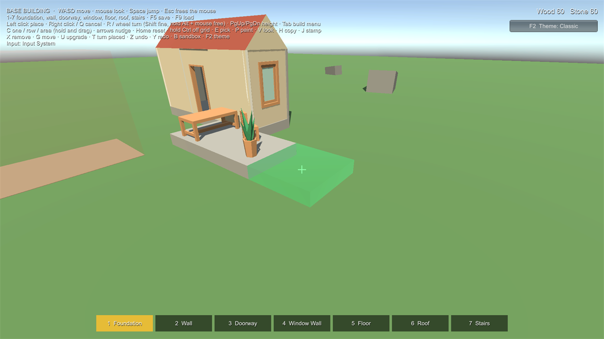
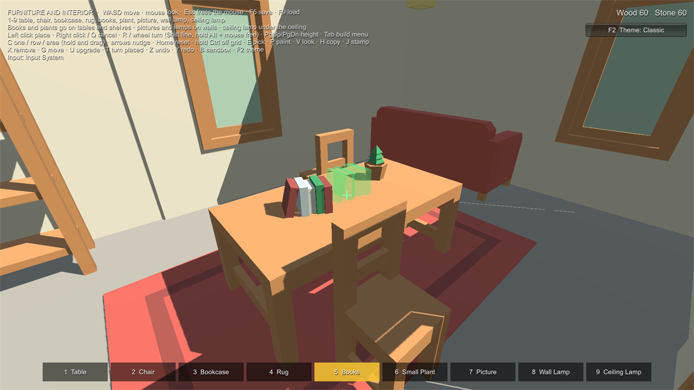
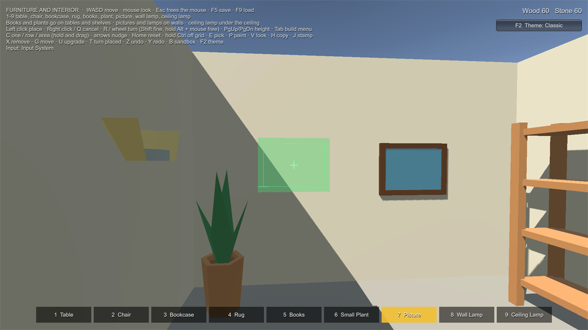
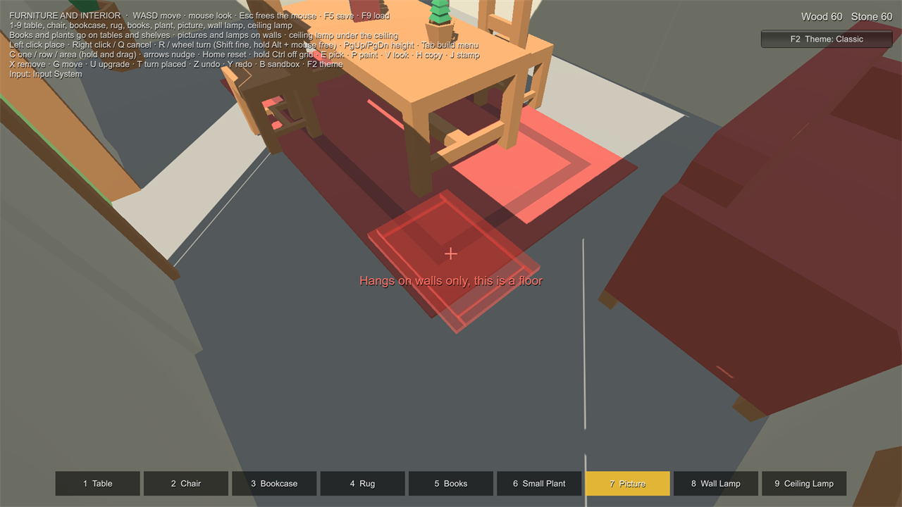
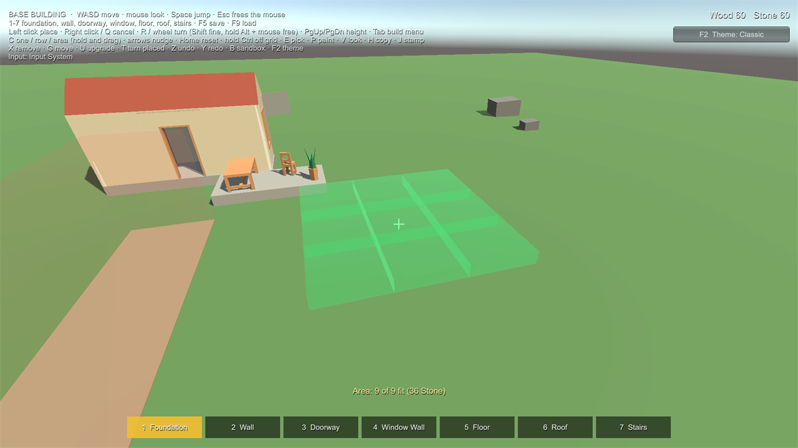
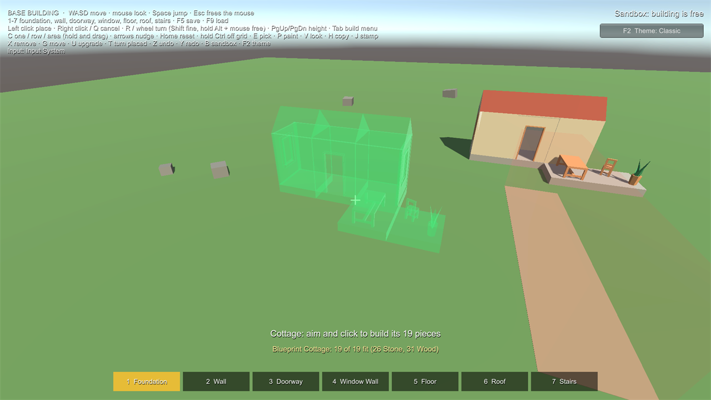

Placement and Sockets
In a scene #
- Build World (one per scene): the pieces it can build (a Piece Catalog, plus extra pieces), what blocks placement (Overlap Mask), the overlap tolerance, the support tolerance (largest gap under a corner that still counts as resting on something, 0.1 m) and the build grid (Grid Cell Size; the grid follows the Build World's position and rotation). It keeps the list of placed pieces.
- Builder (on the player): aims from Aim Origin (usually the camera), shows the preview and checks the placement every frame. It never reads input itself: call its commands from your input code.
- Build Diagnostics (optional): draws the footprint, open sockets and overlaps as gizmos, and can show the current reasons on screen.
Builder commands and events #
| Command | Does |
|---|---|
SelectSlot(i) / SelectPiece(def) |
Choose a piece (slot 0 is key 1 in the sample) |
Rotate(steps) |
Turn by the rotation step (45° by default; the piece's own step if it has one) |
RotateFine(steps) / RotateBy(amount) |
Turn in fine steps (5°), or freely by any amount (mouse movement × Free Rotation Speed) |
SnapRotation |
Off: every turn is a fine step (a setting players can switch) |
ResetRotation() |
Back to no turn, tilt or nudge |
Tilt(pitchSteps, rollSteps) |
Tilt forward/back and sideways, for pieces that allow it |
AdjustHeight(steps) / ResetHeight() |
Raise or lower free placement |
Nudge(right, away) / ResetNudge() |
Move the preview across the surface in Nudge Step steps (up to Max Nudge) |
PlaceOffGrid |
While true, grid pieces are placed freely (hold a key for it) |
PickPiece() |
Eyedropper: take the type, turn and look of the placed piece under the aim |
SelectVariant(i) / NextVariant() |
Choose the look new pieces get (and the Paint tool gives) |
Shape, CycleShape(), BeginShape() |
One piece, a row or an area (see below) |
StartStamp(blueprint) / StopStamp() |
Stamp a blueprint (see below) |
Confirm() |
Try to place where the preview is (with Update Automatically off, at the spot of the last Refresh) |
Confirm(ray) |
Aim along a ray and try to place there, e.g. a mouse-pick ray from a top-down camera |
Cancel() |
Stop building (with a piece picked up: drop it back) |
SetTool(tool) |
Place, Remove, Move, Upgrade, Paint or Copy (see Gameplay) |
Undo() / Redo() |
Undo or redo this player's last action |
RotatePlaced(piece, steps) |
Turn a placed piece where it stands |
Events (UnityEvents, so they can be wired in the Inspector): selectionChanged, previewChanged (validity or reasons
changed), placed (the new piece), rejected (the reasons). Builder.Hint holds a short tip when one helps, e.g.
"Tip: aim closer to the open edge to snap" when a matching socket is just behind the surface you aim at.
When there is nowhere to place (nothing under the aim, no socket in reach) the preview is hidden and only the reason shows.
How a spot is chosen #
A piece tries these in order, using the ones its Allowed Modes include:
- Socket: the nearest open socket on a placed piece that the aim passes within 0.75 m of (Snap Radius), and that one of the selected piece's sockets can join. When several orientations fit, the rotation you chose picks one.
- Grid: the piece rests on the surface you aim at, lined up on the build grid: its edges land on grid lines (a 4 m foundation on a 1 m grid covers whole cells) and it turns in Rotation Step steps (90° by default). The cell size is the piece's Grid Cell, or the Build World's when that is 0. Foundations and floors use Socket + Grid, so ones placed apart still line up. The grid is only for pieces that stand on things.
- Free: the piece goes on the surface you aim at, turned by your rotation and raised by the height offset.
Sockets are points on a piece: their forward points out of the piece, their up is the reference for orientation. Two sockets join when their Socket Types are compatible (either one listing the other is enough). A type's Roll Step allows extra orientations around the joint (180 means a wall can face out or in).
Flush or centred #
Each socket has a Join setting for pieces that join it:
- Flush Outward: the joining piece moves inward until its outer face lines up with the outer face of the piece it joins. The presets make the top edges of foundations and floors flush, so a wall stands on the edge without hanging half over it, and a floor's bottom edges flush, so a floor resting on walls lines up with the foundation below. Walls standing flush on two edges of the same piece may meet at the corner.
- Centred: the joining piece is centred on the socket (the sides of foundations and floors, and wall sockets).

Turning #
- Steps:
Rotateturns by the Builder's Rotation Step (45° by default). A piece can have its Own Rotation Step (Piece Definition > Turning); 0 means it turns freely (fine steps and free turning only). - Fine and free:
RotateFineturns in Fine Rotation Step degrees (5°; Shift + wheel in the samples).RotateByturns by any amount (hold Alt and move the mouse in the samples, or the right stick with the left trigger held). Snap Rotation off makes every turn a fine step: a setting players can switch (F in the samples). - Each piece keeps its own turn (Remember Rotation Per Piece): turning a table doesn't make the next picture hang crooked.
- Random turn: decor with Random Turn starts each placement turned by a random angle up to that many degrees.
- On walls, turning spins a piece around the wall (a picture from landscape to portrait), unless Turns On Walls is off.
- Tilt: pieces with Allow Tilt can be tilted forward/back and sideways up to Max Tilt (I/K and U/O in the samples). Align To Surface tilts a piece to match a sloping surface instead.
- Grid pieces keep the grid's rotation step (the grid decides), whatever the Builder's settings.
Adjusting the spot #
- Height:
AdjustHeightraises or lowers free placement (PgUp / PgDn). - Nudge:
Nudgemoves the preview across the surface in Nudge Step steps, relative to where the player looks, up to Max Nudge (the arrow keys in the samples). - Position Step: free placement can line positions up to a step (for example 0.1 m) on the grid's axes, so furniture sits neatly. 0 turns it off.
- Off the grid: while
PlaceOffGridis true (hold Ctrl in the samples), grid pieces are placed freely. The Build World's Grid Enabled switches the grid off for everyone (N in the samples), and Allow Off Grid off keeps grid pieces always on the grid. A multiplayer host sends these to its players.
Furniture: floors, tables, shelves, walls and ceilings #
Pieces without sockets (the Furniture and Wall Mounted presets) are placed freely. Goes On decides which kind of surface and which side of the footprint touches it:
| Goes On | Touches with | Faces | Use for |
|---|---|---|---|
| Floor | the bottom | your rotation | tables, chairs, vases on tables, books on shelves |
| Wall | the back (local -Z) | away from the wall (your rotation is ignored) | pictures, wall shelves, lamps, signs |
| Ceiling | the top | your rotation | ceiling lamps, hanging plants |
Also Goes On lets one piece use several kinds of surface: a lamp that stands on tables and hangs on walls, a shelf for floors and walls (or Everything: any surface). The piece goes on whichever kind it is aimed at (within 45° of flat is a floor, of upright a wall, of facing down a ceiling); on another kind it gets the usual reason. Only On Categories and Only On Tag limit free placement to certain things ("Goes on Tables only"): placed pieces of those categories, or objects with that Unity tag.
Needs Support (on for both presets) checks that something is right under each corner of the side that touches, taken 10% in from the edges, so a slight overhang is fine but a vase hanging over a table's edge or a picture off the end of a wall is refused. A placed piece you build on still counts as an obstacle: in a bookcase, the shelf above blocks a vase that is too tall for the gap. For shelves inside a model, use the Mesh collider option (or the model's own colliders) so the aim can reach each shelf.


Rules and reasons #
Every placement is checked by rules, and each broken rule gives a reason:
| Rule | Reason |
|---|---|
| Distance from the player | Too far (12.4 m, max 8 m) |
| Surface slope (grid and free placement) | Slope 38° (max 30°); Can't build on a wall or other upright surface |
| Wall and ceiling pieces: the right kind of surface | Hangs on walls only, this is a floor; This wall leans too much (35°, max 30°) |
| Needs Support | Hangs over the edge of Table_01 |
| Cost (when the Build World has a Resource Provider and isn't in sandbox) | Needs 4 Wood (you have 2) |
| Overlap with other colliders (ignoring the preview, the piece snapped to, and level geometry under a free piece) | Overlaps Wall_03 |
| Socket-only piece with no socket in reach | Needs a matching socket: aim at an open edge |
| Piece not in this world's catalog | This piece is not in this world's catalog (add it to the Build World) |
| Only On Categories / Only On Tag | Goes on Tables only |
| Build limits (piece, player, category) | Bed: only 2 per player; Furniture: only 20 in this world; Only 200 pieces per player |
| A stamped piece with nothing holding it | Nothing would hold it up here |
Add your own rules to BuildWorld.Validator.Rules (implement IPlacementRule).

Rows and areas #
Pieces with Allow Rows (walls, fences) or Allow Areas (foundations, floors) can be placed many at once. Set the
Builder's Shape to Line or Area (C in the samples), start at the preview with BeginShape() (press), aim to stretch
it, then Confirm() (release). The preview shows every piece, each checked as if placed alone, with how many fit and
what they cost together; pieces that don't fit (or that the player can't pay for, or that would pass a limit) stay red
and are left out. Every piece is a separate request, so the authority (a multiplayer host too) checks and charges each
one, and they share a group: one undo takes the whole row or area back. Max Batch caps the size (64).

Blueprints #
A blueprint is a group of pieces to build again in one go: a hut, a room, a wall section.
- Copy: the Copy tool (H in the samples) copies the aimed piece and everything joined to it (by sockets, or standing
on or under it), then starts stamping it. In code:
BuildBlueprint.Capture(piece, world.Registry). - Stamp:
StartStamp(blueprint)previews every piece around the aim; Rotate turns it. Confirm builds it: each piece is checked at its exact spot (joined to the sockets it sits on, and something must hold it up), charged, and one undo takes the whole stamp back. Pieces are built from the ground up, whatever order a blueprint lists them in. Cancel stops stamping. - Keep them: your own as Blueprint assets (Assets > Create > All In One Runtime Building Kit > Blueprint, or the
Builder's context menu Save Copied Blueprint As Asset in Play Mode, which saves into
Assets/AllInOneRuntimeBuildingKitData/Blueprints); players' as JSON files withBuilder.SaveBlueprint(name)andBlueprintLibrary(Names,Load,Delete).
The Base Building sample stamps its cottage with J.

Looks and the Paint tool #
A Piece Definition's Looks are colours (tints of the piece's own materials) or materials (swapped for all of them).
Look 0 is always the model as it is. Players choose one while placing (NextVariant, V in the samples) and change placed
pieces with the Paint tool (P). Looks are saved, undone like everything else and sent to every player. The preview
takes the chosen look's colour (the theme's Use Look Colour).
Build limits #
- Per piece: Max In World and Max Per Player on the Piece Definition ("Bed: only 2 per player").
- Per category and per player on the Build World: Category Limits and Max Pieces Per Player.
The preview shows the reason before the click; the authority refuses too. Moving a piece doesn't count it twice.
Performance #
The preview runs every frame without allocating memory once a reason text has been shown (texts are reused), and the socket search skips placed pieces far from your aim.
Measured with 900 placed foundations (a 30 by 30 field, 7200 open sockets), time per preview refresh:
| Aim | Time | Memory per refresh |
|---|---|---|
| Wall snapping to a foundation's edge | 0.24 ms | 0 bytes |
| Foundation on the grid | 0.24 ms | 0 bytes |
| Small piece overlapping a rock (refused) | 0.009 ms | 0 bytes |
| Small piece too far away (refused) | 0.007 ms | 0 bytes |
| Small piece over a foundation's edge (refused) | 0.006 ms | 0 bytes |
Snapping and grid cases cost the most because they search the sockets of nearby pieces; a refusal stops at the first rule that fails.
Machine: AMD Ryzen 7 5700X3D, 32 GB, Radeon RX 9060 XT, Windows 11, Unity 6000.3.24f1, in the Editor (a player build is
faster). The times come from the kit's performance tests (PreviewPerformanceTests); "0 bytes" is checked by the Unity
Test Framework's GC allocation constraint, which counts allocations with the Profiler's recorder, and by the Benchmark
sample.
Check it on your machine: open the Benchmark sample scene (Samples/Benchmark/RBK_Benchmark.unity) and press
Play, or add it to a player build. It places 900 foundations, times each kind of aim and shows the results, your
processor and Unity version on screen and in the Console.
Requests #
Confirm() sends a Build Request (piece ID, pose, socket link, a unique request ID) to the world's authority. The
authority checks everything again before placing: it never trusts the preview. A request ID is applied at most once.
In single player this is the LocalBuildAuthority; a multiplayer host uses the same request.